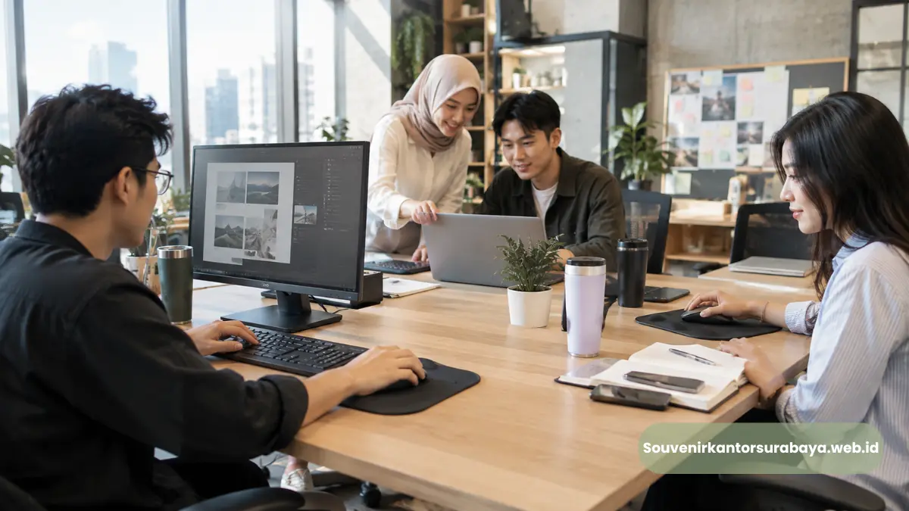

- Mouse Pad Ergonomis Custom Logo Menjadi Solusi Apa untuk Kantor?
- Mengapa Mouse Pad Custom Logo Relevan untuk Branding Perusahaan?
- Bagaimana Memilih Spesifikasi Mouse Pad Ergonomis untuk Kantor?
- Varian Mouse Pad Apa yang Cocok untuk Kebutuhan Corporate?
- Bagaimana Custom Logo Dibuat agar Tetap Profesional?
- Bagaimana Mouse Pad Dapat Digunakan sebagai Employee Gift?
- Bagaimana Relevansi Produk Ini untuk Kantor di Semarang?
- Apa yang Perlu Diperhatikan Sebelum Produksi?
- Siapkan Mouse Pad Custom Logo untuk Kantor Semarang
Mouse pad ergonomis custom logo untuk kantor di Semarang menggabungkan fungsi aksesori meja kerja dengan personalisasi identitas perusahaan untuk employee gift dan merchandise korporat.
- Mouse pad ergonomis dapat digunakan sebagai aksesori workstation.
- Custom logo menjadikannya bagian dari branding perusahaan.
- Produk dapat digunakan untuk employee gift, seminar, onboarding, atau merchandise internal.
- Material, ukuran, permukaan, wrist support, dan kualitas cetak perlu disesuaikan.
- Kebutuhan perusahaan dapat dikonsultasikan melalui SouvenirKantorSurabaya.web.id.
Mouse Pad Ergonomis Custom Logo Menjadi Solusi Apa untuk Kantor?
Mouse pad ergonomis custom logo menjadi solusi merchandise meja kerja yang menggabungkan fungsi penggunaan harian dengan identitas visual perusahaan.
Bayangkan staf HRD sedang menyiapkan employee gift untuk karyawan kantor. Produk yang dicari bukan sekadar benda dengan logo, tetapi merchandise yang dapat benar-benar digunakan setelah acara selesai.
Mouse pad menjadi salah satu pilihan karena berkaitan langsung dengan workstation. Versi ergonomis dapat dilengkapi wrist rest atau desain permukaan yang mendukung penggunaan mouse.
Mengapa Mouse Pad Custom Logo Relevan untuk Branding Perusahaan?
Mouse pad custom logo membuat identitas perusahaan hadir pada area kerja melalui produk yang digunakan secara rutin oleh karyawan atau penerima merchandise.
Logo dapat ditempatkan pada bagian tertentu dengan ukuran yang proporsional. Warna perusahaan juga dapat diterapkan pada bagian desain apabila material dan metode produksi memungkinkan.
Untuk employee gift, pendekatan minimalis sering sesuai karena produk tetap terlihat profesional dan tidak terasa seperti media iklan.
Baca Juga
Bagaimana Memilih Spesifikasi Mouse Pad Ergonomis untuk Kantor?
Spesifikasi mouse pad ergonomis perlu memperhatikan ukuran, material, permukaan, alas antiselip, wrist support, finishing, dan metode personalisasi logo.
Ukuran perlu disesuaikan dengan meja dan kebutuhan pengguna. Permukaan memengaruhi pergerakan mouse, sedangkan alas antiselip membantu menjaga posisi produk.
Wrist support dapat menjadi fitur tambahan untuk pengguna yang menginginkan dukungan pada area telapak atau pergelangan. OSHA menyarankan dukungan tersebut digunakan dengan benar dalam workstation yang sesuai.
Varian Mouse Pad Apa yang Cocok untuk Kebutuhan Corporate?
Varian dapat dibedakan berdasarkan ukuran, bentuk, material, keberadaan wrist support, dan gaya visual yang sesuai dengan identitas perusahaan.
Mouse pad minimalis cocok untuk perusahaan yang menginginkan logo kecil. Mouse pad dengan wrist rest cocok untuk konsep employee gift yang menonjolkan fungsi workstation.
Extended mouse pad cocok untuk meja dengan ruang lebih luas, sedangkan mouse pad custom warna korporat memungkinkan warna brand menjadi elemen desain.
Bagaimana Custom Logo Dibuat agar Tetap Profesional?
Logo sebaiknya ditempatkan secara proporsional, menggunakan warna yang sesuai identitas perusahaan, dan disesuaikan dengan karakter permukaan mouse pad.
Logo kecil di sudut dapat memberi tampilan premium, sedangkan logo tengah lebih sesuai untuk merchandise event. Logo dan nama program juga dapat digunakan untuk kampanye internal.
File logo beresolusi baik penting agar hasil produksi tidak terlihat buram. Sebelum produksi massal, desain sebaiknya melalui tahap konfirmasi.

Bagaimana Mouse Pad Dapat Digunakan sebagai Employee Gift?
Mouse pad dapat menjadi employee gift untuk onboarding, penghargaan internal, anniversary, gathering, training, dan program merchandise perusahaan.
Produk ini paling relevan ketika penerimanya menggunakan workstation berbasis komputer. Perusahaan juga dapat menggabungkannya dengan notebook, pulpen, tumbler, pouch, atau kartu ucapan.
Untuk kegiatan internal, kemasan dapat dibuat sederhana. Untuk hadiah relasi bisnis, kombinasi produk dan kemasan dapat dibuat lebih formal.
Bagaimana Relevansi Produk Ini untuk Kantor di Semarang?
Kantor di Semarang dapat menggunakan mouse pad custom logo sebagai merchandise workstation untuk karyawan, peserta acara, maupun kebutuhan corporate gifting.
Melayani pemesanan untuk kantor di Semarang dapat dilakukan dengan menyesuaikan kebutuhan jumlah, desain, spesifikasi, dan pengiriman.
BPS mencatat bahwa 99,29 persen penduduk Jawa Tengah yang mengakses internet pada 2024 menggunakan telepon seluler, sedangkan penggunaan laptop tercatat 8,07 persen dan komputer 2,99 persen. Data tersebut menggambarkan akses internet, bukan penggunaan komputer di kantor.
Apa yang Perlu Diperhatikan Sebelum Produksi?
Sebelum produksi, perusahaan perlu menetapkan jumlah, ukuran, material, desain logo, warna, kemasan, dan jadwal kebutuhan agar hasil merchandise sesuai brief.
Brief dapat mencakup jumlah mouse pad, ukuran, jenis material, model wrist support, logo, warna korporat, kemasan, tujuan pemberian, dan target waktu.
Kejelasan spesifikasi mengurangi risiko ketidaksesuaian antara konsep dan hasil akhir.
Siapkan Mouse Pad Custom Logo untuk Kantor Semarang
Perusahaan dapat menyiapkan brief mouse pad berdasarkan jumlah penerima dan konsep branding lalu mendiskusikan spesifikasi produk sesuai kebutuhan corporate gifting.
Untuk melihat pilihan merchandise dan membandingkan kebutuhan dengan produk terkait, kunjungi SouvenirKantorSurabaya.web.id dan sampaikan kebutuhan mouse pad ergonomis custom logo untuk kantor di Semarang.

Hawa Nadira
Tim penulis CorporateGifts ID berfokus pada strategi souvenir kantor, merchandise korporat, dan inovasi brand untuk klien B2B.
Keahlian: Branding perusahaan, produksi souvenir, paket event, desain materi promosi.
Artikel Terkait

Souvenir Kantor Corporate untuk Perusahaan Malang
Souvenir kantor corporate untuk perusahaan Malang dengan pilihan custom logo, gift set, dan employee gift untuk kebutuhan branding.
Baca Selengkapnya
Mouse Pad Ergonomis Custom Logo Surabaya
Pesan mouse pad ergonomis custom logo untuk kantor di Surabaya. Cocok untuk employee gift, branding perusahaan, dan souvenir corporate.
Baca Selengkapnya
Mouse Pad Ergonomis Custom Logo Bandung
Pesan mouse pad ergonomis custom logo untuk kantor di Bandung sebagai employee gift, souvenir corporate, dan media branding perusahaan.
Baca Selengkapnya